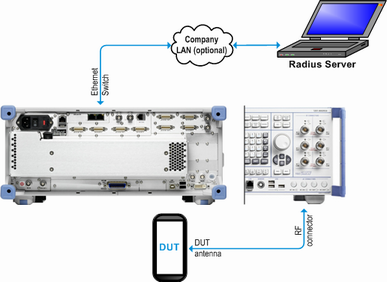

WLAN security comprises (mutual) authentication between AP and STA, packet encryption and message integrity verification. The beacon frames include a WPA parameter indicating the authentication and encryption algorithms to be used. The WLAN signaling application supports Wi-Fi protected access (WPA) and Wi-Fi protected access II (WPA2), personal mode and enterprise mode.
The enterprise mode requires the advanced signaling option R&S CMW-KS660. |
In WPA, packets are encrypted using the temporal key integrity protocol (TKIP). An additional message integrity check algorithm ("Michael") is used.
WPA2 mandates CCMP, an AES-based encryption mode.
In personal mode, authentication is based on a passphrase that generates a 256-bit pre-shared key (PSK) at both the AP and the STA.
Wi-Fi protected setup (WPS) can be used to simplify the security setup in WPA/WPA2 personal mode, see "Wi-Fi Protected Setup (WPS)".
The enterprise mode requires a RADIUS server and uses an extensible authentication protocol (EAP) for authentication. An internal or external RADIUS server can be set up for EAP authentication. When using an external RADIUS server, it must be reachable via LAN SWITCH connector no 2 of the Ethernet switch board (option R&S CMW-H661x). The complete test setup is shown below.

We recommend that you use R&S CMWmars to obtain detailed information about the MAC messages exchanged during authentication.
Which of the described security mechanisms are supported, depends on the selected operation modes, as shown in the following table.
AP | Station | IBSS | Wi-Fi Direct | Hotspot 2.0 | |
|---|---|---|---|---|---|
WPA personal | X | X | - | X | - |
WPA2 personal | X | X | - | X | - |
WPA enterprise | X | - | - | - | - |
WPA2 enterprise | X | - | - | - | X |
For settings related to WLAN security, see "Security Settings".